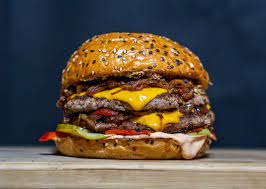

Famous Texas Burger

A Declicious Texas Style Burger
Take your taste buds south of the mason dixie
line with this delicious texas style smash burger
Ingredients List
- Beef Patties
- Onions
- Cheddar Cheese
- Pickles
- Sesame Seed Bun
- MayoChup
- Take beef patties out 20 minutes prior to cook
- Slice onions, looking for strips
- Set heat on blackstone or flat top to high
- Roll beef patties into ball
- Build on blackstone
- Place burger ball and top with onion strips
- With the butt of spatula firmly press ball down
- While patties searing, grab buns
- Slather buns with mayochup, place on blackstone
- Flip burger patties
- Remove buns and set on plate
- Place 4-6 pickles on bottom bun
- Place cheddar cheese on each patty
- Stack burgers and place on bottom bun
- Place top bun